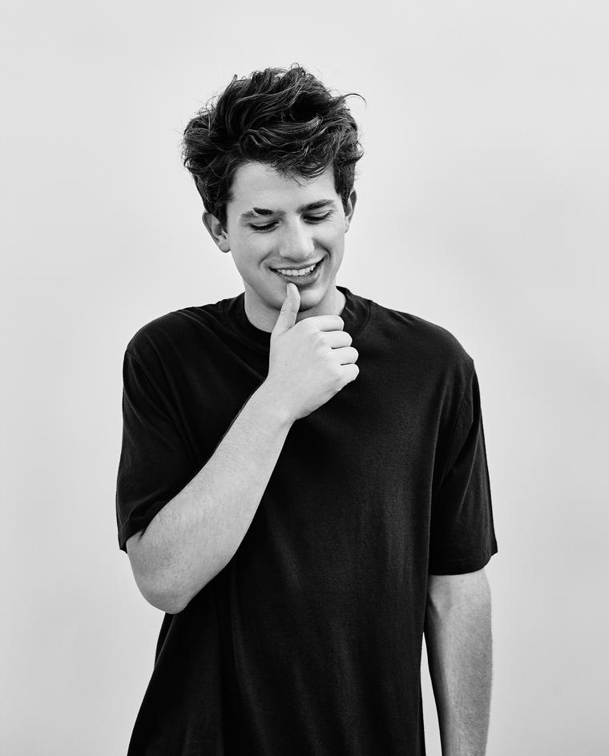

이름 : Charlie Puth
출생 : 1991년 12월 2일 (26세), 미국 뉴저지주 럼슨
소속사 : Artist Partners Group
데뷔 : 2009년
수상 : 빌보드 뮤직 어워드 톱 랩 송,
빌보드 뮤직 어워드 톱 핫 100 송
사이트 :
공식 사이트
,
트위터
,
페이스북
,
유튜브
,
인스타그램
대표곡
Attention
How long
We don't talk anymore
See you again
음원 감상(유튜브)
(재생되지 않을 경우, 하단에 YOUTUBE.COM을 클릭하여 유튜브에서 보시길 바랍니다.)